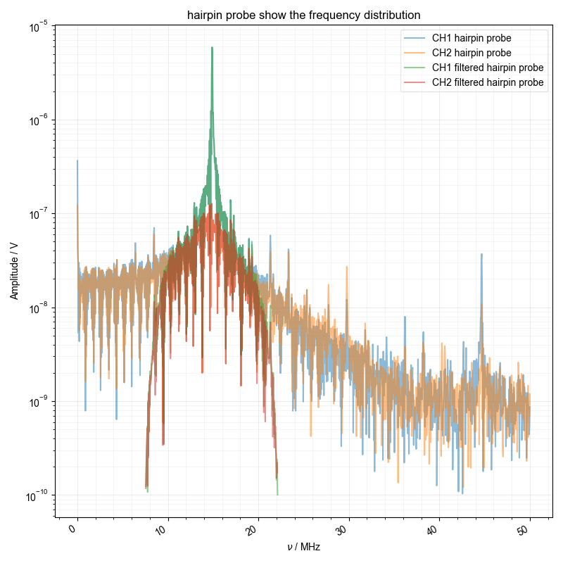
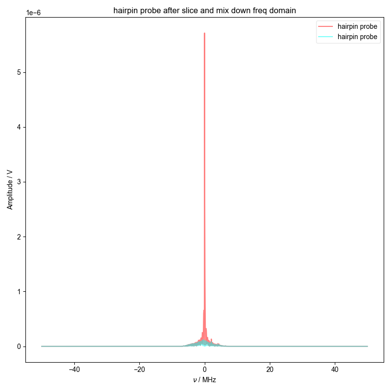
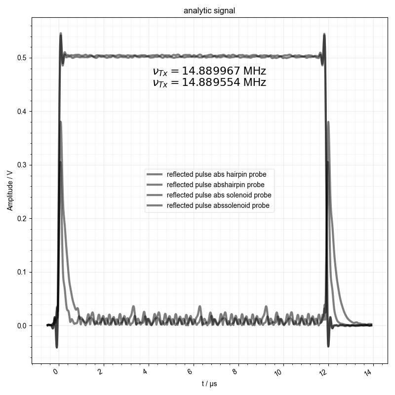

Note
Go to the end to download the full example code
Process a square wave reflection¶
Processes a square wave reflection in order to calculate the Q of a NMR probe. Optional to show the phasing and real on top of the fitted square wave reflection.
- 
- 
- 

---------- logging output to C:\Users\jmfranck\pyspecdata.0.log ----------
--> proc_square_refl.py(19):pyspecdata.core <module> 2023-05-13 16:25:35,783
INFO: processing dataset hairpin probe
logarithmic
--> analyze_square_refl.py(101):pyspecdata.core analyze_square_refl 2023-05-13 16:25:36,114
INFO: frq: 14889966.915265452
--> analyze_square_refl.py(125):pyspecdata.core analyze_square_refl 2023-05-13 16:25:36,213
INFO: the amplitude is 0.5041899787959185
{R, A}
{\bf Warning:} You have no error associated with your plot, and I want to flag this for now
c:\users\jmfranck\git_repos\pyspecdata\pyspecdata\core.py:7068: Warning: You have no error associated with your plot, and I want to flag this for now
warnings.warn('You have no error associated with your plot, and I want to flag this for now',Warning)
--> analyze_square_refl.py(169):pyspecdata.core analyze_square_refl 2023-05-13 16:25:36,419
INFO: output: {'A': 0.619157866200667, 'C': 0.0007775306046049341, 'R': 8731153.658925781}
--> analyze_square_refl.py(170):pyspecdata.core analyze_square_refl 2023-05-13 16:25:36,588
INFO: latex: $f(t)=0.62 e^{- 8.73\times 10^{6} t} + 0.00$
--> analyze_square_refl.py(179):pyspecdata.core analyze_square_refl 2023-05-13 16:25:36,591
INFO: -11728.316475971678
c:\users\jmfranck\git_repos\pyspecdata\pyspecdata\core.py:1959: UserWarning: marker is redundantly defined by the 'marker' keyword argument and the fmt string "." (-> marker='.'). The keyword argument will take precedence.
retval = myplotfunc(*plotargs,**kwargs)
c:\users\jmfranck\git_repos\pyspecdata\pyspecdata\core.py:1959: UserWarning: linestyle is redundantly defined by the 'linestyle' keyword argument and the fmt string "k--" (-> linestyle='--'). The keyword argument will take precedence.
retval = myplotfunc(*plotargs,**kwargs)
--> proc_square_refl.py(19):pyspecdata.core <module> 2023-05-13 16:25:36,756
INFO: processing dataset solenoid probe
logarithmic
--> analyze_square_refl.py(101):pyspecdata.core analyze_square_refl 2023-05-13 16:25:36,993
INFO: frq: 14889553.824459042
--> analyze_square_refl.py(125):pyspecdata.core analyze_square_refl 2023-05-13 16:25:37,042
INFO: the amplitude is 0.5013108588730283
{R, A}
{\bf Warning:} You have no error associated with your plot, and I want to flag this for now
--> analyze_square_refl.py(169):pyspecdata.core analyze_square_refl 2023-05-13 16:25:37,092
INFO: output: {'A': 0.5118213794712735, 'C': 0.002100769021292038, 'R': 3969130.4439018033}
--> analyze_square_refl.py(170):pyspecdata.core analyze_square_refl 2023-05-13 16:25:37,094
INFO: latex: $f(t)=0.51 e^{- 3.97\times 10^{6} t} + 0.00$
--> analyze_square_refl.py(179):pyspecdata.core analyze_square_refl 2023-05-13 16:25:37,098
INFO: 22313.576370994568
from pylab import *
from pyspecdata import *
from pyspecProcScripts.third_level.analyze_square_refl import analyze_square_refl
from pyspecProcScripts import *
init_logging(level="debug")
rcParams["image.aspect"] ="auto"
# sphinx_gallery_thumbnail_number = 3
with fl_mod() as fl:
for filename, expno, dataset_name in [("210125_sqwv_cap_probe_1", "capture1", "hairpin probe"),
('210111_sqwv_sol_probe_1', 'capture1', 'solenoid probe')]:
logger.info(strm("processing dataset",dataset_name))
d = find_file(filename,exp_type='ODNP_NMR_comp/test_equip',expno=expno)
d.set_units('t','s').name('Amplitude').set_units('V')
d.setaxis("ch", r_[1, 2])
d.set_units("t", "s")
analyze_square_refl(d, label=dataset_name, fl=fl,
show_analytic_signal_phase=False,
show_analytic_signal_real=False)
Total running time of the script: ( 0 minutes 3.393 seconds)